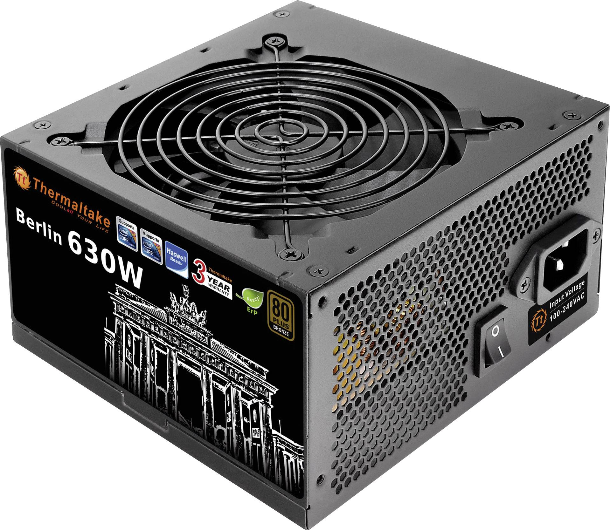

Nätaggregats uppgifr är att få ström till alla andra komponenter. Den tar strömmen som kommer från vägguttaget och omvandla det till ström som behövs att användas för datorn,
och när man använder en bra nätaggregat så kommer datorn och andra komponenterv att hålla sig längre.
Saker man kan tänka på innan man köper ett nätaggregat är vilken effekt man vill ha, man mäter effekten med W. En bra gaming dator behöver minst 650W för att klara sig bra.
Hur effektiv är en nätaggregat på att omvandla elektricitet, och när omvandlingen sker så brukar man förlora lite ström så att man får inte lika
mycket elektricitet som innan omvandlingen. Så det man behöver tänka på är att en bra nätaggregat måste behålla 80-90% av elektricitet.
En bra nätaggregat är ASUS ROG Thor 850W
